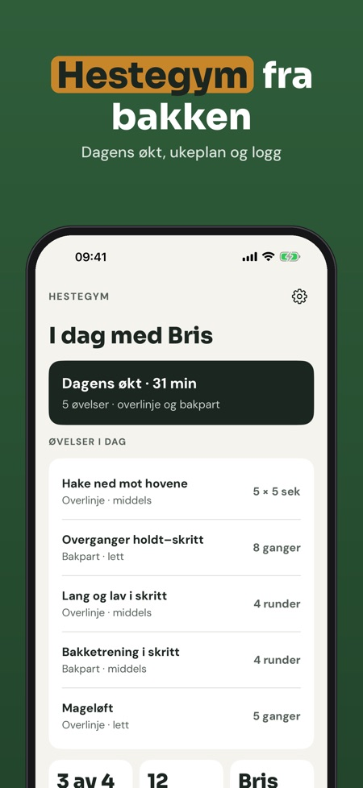
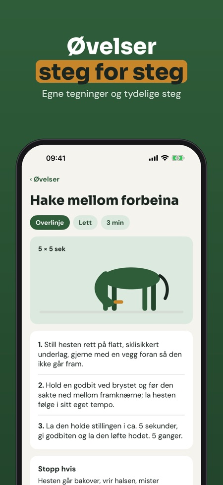
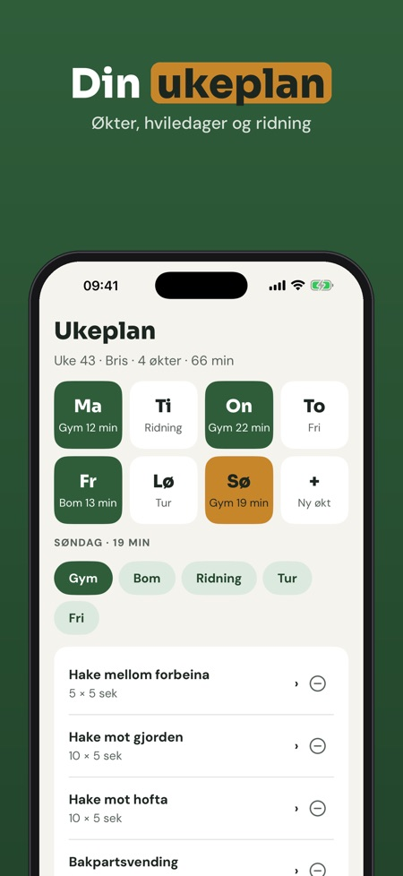

Hestegym er treningsprogrammet for deg som jobber med hesten fra bakken. Øvelsesbibliotek, ukeplan, timer og logg ligger på ett sted.



En app med øvelser du gjør med hesten fra bakken, med ukeplan, timer og logg.
Biblioteket er sortert etter mål som overlinje, bakpart, balanse og smidighet.
Ja, appen virker uten nett.
Ja, dagens økt med timer, 12 øvelser og loggen kan brukes uten kjøp.
Nei. Fullversjonen er et engangskjøp som låser opp hele biblioteket, ukeplaner, påminnelser, fremgang og flere hester.
Nei. Er hesten skadet, halt eller under behandling, spør veterinæren før du starter.
Hestegym er treningsprogrammet for deg som jobber med hesten fra bakken: øvelsesbibliotek, ukeplan, timer og logg på ett sted.
Dagens økt med timer, 12 øvelser og loggen kan brukes uten kjøp. Fullversjonen er et engangskjøp som låser opp hele biblioteket, ukeplaner, påminnelser, fremgang og flere hester. Ingen abonnement.
Hestegym gir ikke veterinærråd og erstatter ikke veterinær eller fysioterapeut. Er hesten skadet, halt eller under behandling: spør veterinæren før du starter.